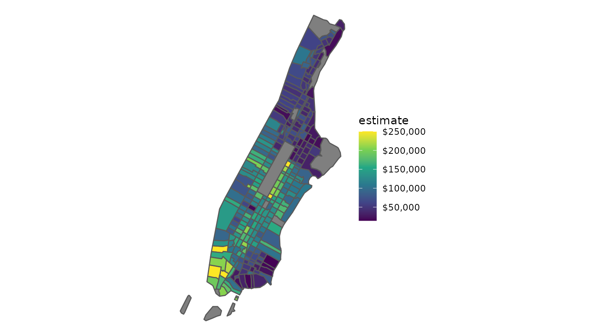

If requested, tidycensus can return simple feature geometry for geographic units along with variables from the decennial US Census or American Community survey. By setting geometry = TRUE in a tidycensus function call, tidycensus will use the tigris package to retrieve the corresponding geographic dataset from the US Census Bureau and pre-merge it with the tabular data obtained from the Census API. As of tidycensus version 0.9.9.2, geometry = TRUE is supported for all geographies currently available in the package.
The following example shows median household income from the 2015-2019 ACS for Census tracts in Orange County, California:
library(tidycensus)
library(tidyverse)
options(tigris_use_cache = TRUE)
orange <- get_acs(state = "CA", county = "Orange", geography = "tract",
variables = "B19013_001", geometry = TRUE)
head(orange)## Simple feature collection with 6 features and 5 fields
## Geometry type: MULTIPOLYGON
## Dimension: XY
## Bounding box: xmin: -117.9723 ymin: 33.634 xmax: -117.8209 ymax: 33.88027
## Geodetic CRS: NAD83
## GEOID NAME variable
## 1 06059074108 Census Tract 741.08, Orange County, California B19013_001
## 2 06059076202 Census Tract 762.02, Orange County, California B19013_001
## 3 06059089105 Census Tract 891.05, Orange County, California B19013_001
## 4 06059099222 Census Tract 992.22, Orange County, California B19013_001
## 5 06059099239 Census Tract 992.39, Orange County, California B19013_001
## 6 06059011403 Census Tract 114.03, Orange County, California B19013_001
## estimate moe geometry
## 1 84665 9113 MULTIPOLYGON (((-117.922 33...
## 2 87521 9317 MULTIPOLYGON (((-117.8464 3...
## 3 62042 7646 MULTIPOLYGON (((-117.9203 3...
## 4 64391 8385 MULTIPOLYGON (((-117.9723 3...
## 5 121771 23235 MULTIPOLYGON (((-117.9711 3...
## 6 67604 9565 MULTIPOLYGON (((-117.9155 3...Our object orange looks much like the basic tidycensus output, but with a geometry list-column describing the geometry of each feature, using the geographic coordinate system NAD 1983 (EPSG: 4269) which is the default for Census shapefiles. tidycensus uses the Census cartographic boundary shapefiles for faster processing; if you prefer the TIGER/Line shapefiles, set cb = FALSE in the function call.
As the dataset is in a tidy format, it can be quickly visualized with the geom_sf functionality currently in the development version of ggplot2:
orange %>%
ggplot(aes(fill = estimate)) +
geom_sf(color = NA) +
coord_sf(crs = 26911) +
scale_fill_viridis_c(option = "magma") 
Please note that the UTM Zone 11N coordinate system (26911) is appropriate for Southern California but may not be for your area of interest. For help identifying an appropriate projected coordinate system for your data, take a look at the {crsuggest} R package.
Faceted mapping
One of the most powerful features of ggplot2 is its support for small multiples, which works very well with the tidy data format returned by tidycensus. Many Census and ACS variables return counts, however, which are generally inappropriate for choropleth mapping. In turn, get_decennial and get_acs have an optional argument, summary_var, that can work as a multi-group denominator when appropriate. Let’s use the following example of the racial geography of Harris County, Texas. First, we’ll request data for non-Hispanic whites, non-Hispanic blacks, non-Hispanic Asians, and Hispanics by Census tract for the 2010 Census, and specify total population as the summary variable. year is not necessary here as the default is 2010.
racevars <- c(White = "P005003",
Black = "P005004",
Asian = "P005006",
Hispanic = "P004003")
harris <- get_decennial(geography = "tract", variables = racevars,
state = "TX", county = "Harris County", geometry = TRUE,
summary_var = "P001001")
head(harris)## Simple feature collection with 6 features and 5 fields
## Geometry type: MULTIPOLYGON
## Dimension: XY
## Bounding box: xmin: -95.37457 ymin: 29.74486 xmax: -95.32409 ymax: 29.80907
## Geodetic CRS: NAD83
## # A tibble: 6 × 6
## GEOID NAME variable value summary_value geometry
## <chr> <chr> <chr> <dbl> <dbl> <MULTIPOLYGON [°]>
## 1 48201100000 Census … White 2082 4690 (((-95.37348 29.751, -95.37…
## 2 48201100000 Census … Black 1047 4690 (((-95.37348 29.751, -95.37…
## 3 48201100000 Census … Asian 134 4690 (((-95.37348 29.751, -95.37…
## 4 48201100000 Census … Hispanic 1070 4690 (((-95.37348 29.751, -95.37…
## 5 48201210900 Census … White 35 1620 (((-95.32851 29.80846, -95.…
## 6 48201210900 Census … Black 1195 1620 (((-95.32851 29.80846, -95.…We notice that there are four entries for each Census tract, with each entry representing one of our requested variables. The summary_value column represents the value of the summary variable, which is total population in this instance. When a summary variable is specified in get_acs, both summary_est and summary_moe columns will be returned.
With this information, we can set up an analysis pipeline in which we calculate a new percent-of-total column; recode the Census variable names into more intuitive labels; and visualize the result for each group in a faceted plot.
harris %>%
mutate(pct = 100 * (value / summary_value)) %>%
ggplot(aes(fill = pct)) +
facet_wrap(~variable) +
geom_sf(color = NA) +
coord_sf(crs = 26915) + # Appropriate CRS for Houston, but may not be for your data
scale_fill_viridis_c()
Detailed shoreline mapping with tidycensus
Geometries in tidycensus default to the Census Bureau’s cartographic boundary shapefiles. Cartographic boundary shapefiles are preferred to the core TIGER/Line shapefiles in tidycensus as their smaller size speeds up processing and because they are pre-clipped to the US coastline.
However, there may be circumstances in which your mapping requires more detail. A good example of this would be maps of New York City, in which even the cartographic boundary shapefiles include water area. For example, take this example of median household income by Census tract in Manhattan (New York County), NY:
library(tidycensus)
library(tidyverse)
options(tigris_use_cache = TRUE)
ny <- get_acs(geography = "tract",
variables = "B19013_001",
state = "NY",
county = "New York",
geometry = TRUE)
ggplot(ny, aes(fill = estimate)) +
geom_sf() +
theme_void() +
scale_fill_viridis_c(labels = scales::dollar)
As illustrated in the graphic, the boundaries of Manhattan include water boundaries - stretching into the Hudson and East Rivers. In turn, a more accurate representation of Manhattan’s land area might be desired. To accomplish this, a tidycensus user can use the core TIGER/Line shapefiles instead, then erase water area from Manhattan’s geometry.
tidycensus allows users to get TIGER/Line instead of cartographic boundary shapefiles with the keyword argument cb = FALSE. This argument will be familiar to users of the tigris package, as it is used by tigris to distinguish between cartographic boundary and TIGER/Line shapefiles in the package.
library(sf)
ny2 <- get_acs(geography = "tract",
variables = "B19013_001",
state = "NY",
county = "New York",
geometry = TRUE,
cb = FALSE) Next, tools in the tigris and sf package can be used to remove the water area from Manhattan’s Census tracts. sf allows users to “erase” one geometry from another, akin to tools available in desktop GIS software. The st_erase() function defined below is not exported by the package, but is defined in the documentation for st_difference().
The geometry used to “erase” water area from the tract polygons is obtained by the area_water() function in tigris, making sure to choose the option class = "sf".
library(tigris)
st_erase <- function(x, y) {
st_difference(x, st_union(y))
}
ny_water <- area_water("NY", "New York", class = "sf")
ny_erase <- st_erase(ny2, ny_water)After performing this operation, we can visualize the result:
ggplot(ny_erase, aes(fill = estimate)) +
geom_sf() +
theme_void() +
scale_fill_viridis_c(labels = scales::dollar)
The map appears as before, but instead the polygons now hug the shoreline of Manhattan.
Writing to shapefiles
Beyond this, you might be interested in writing your dataset to a shapefile or GeoJSON for use in external GIS or visualization applications. You can accomplish this with the st_write function in the sf package:
Your tidycensus-obtained dataset can now be used in ArcGIS, QGIS, Tableau, or any other application that reads shapefiles.
There is a lot more you can do with the spatial functionality in tidycensus, including more sophisticated visualization and spatial analysis; look for updates on my blog and in this space.